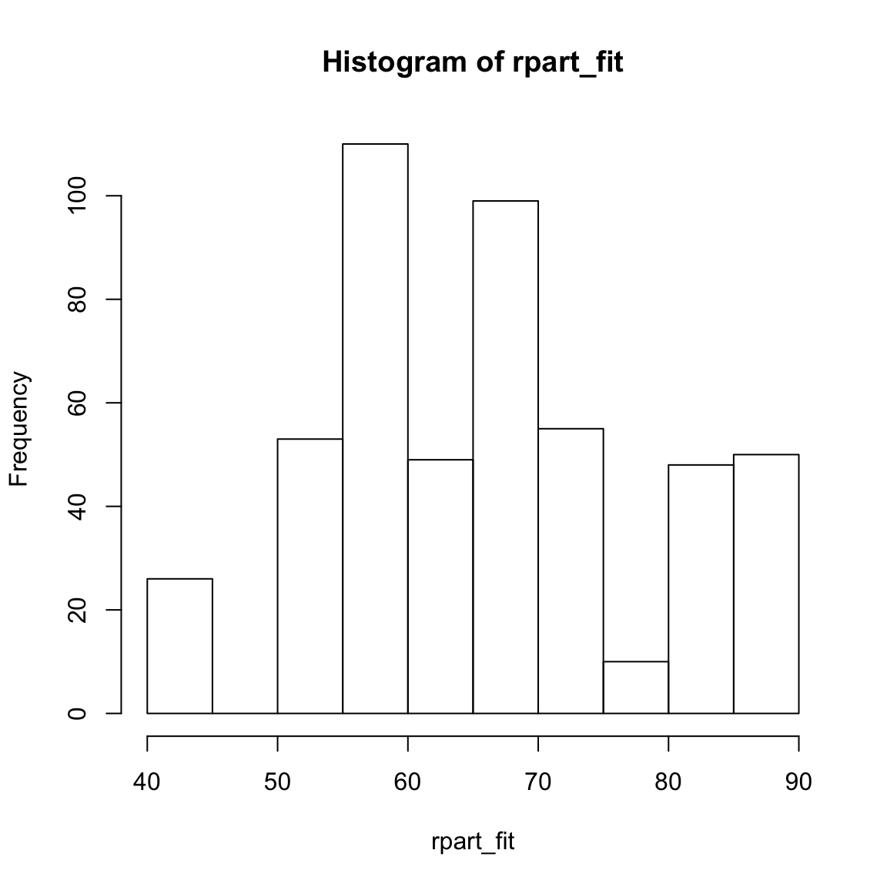
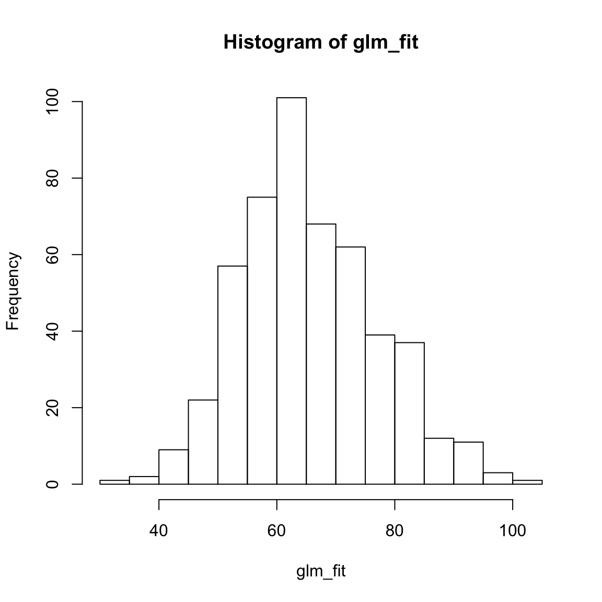
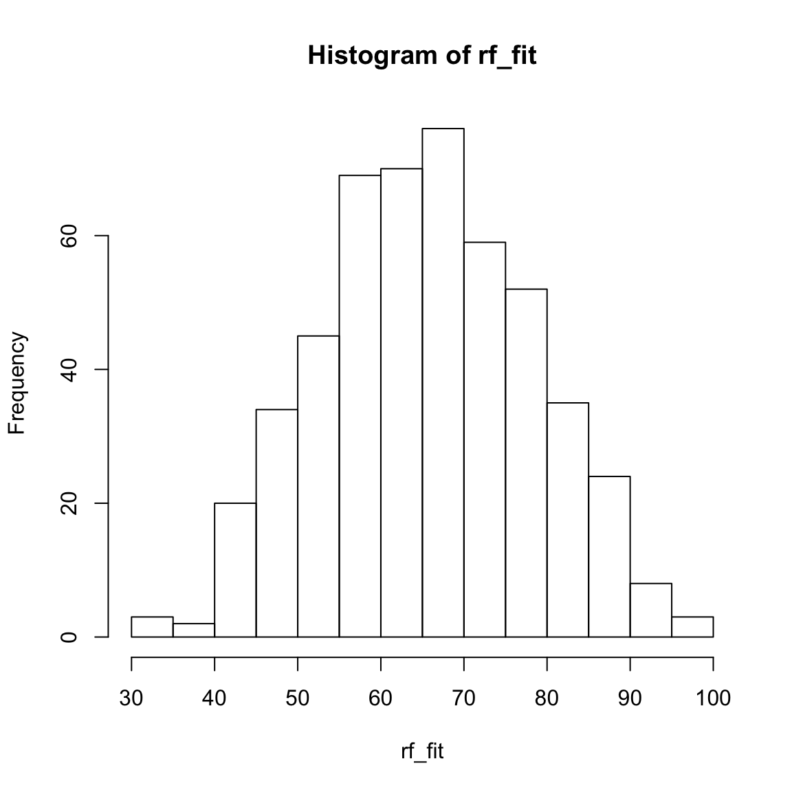
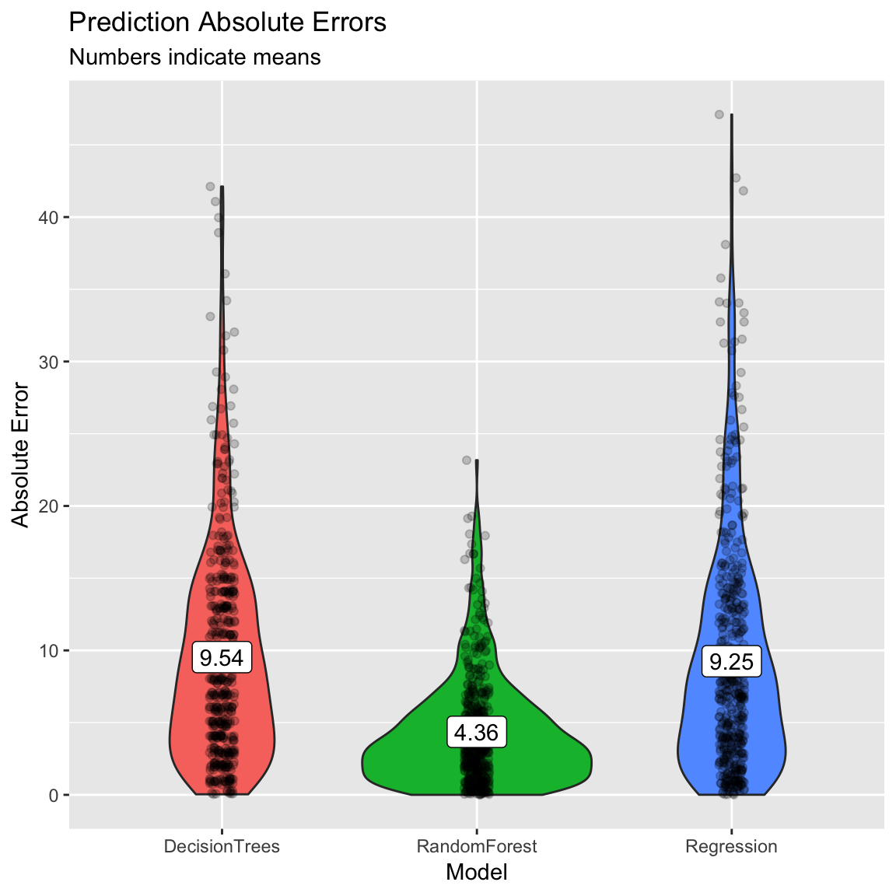
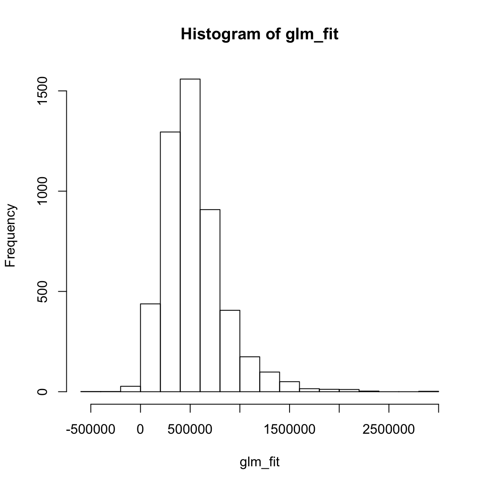
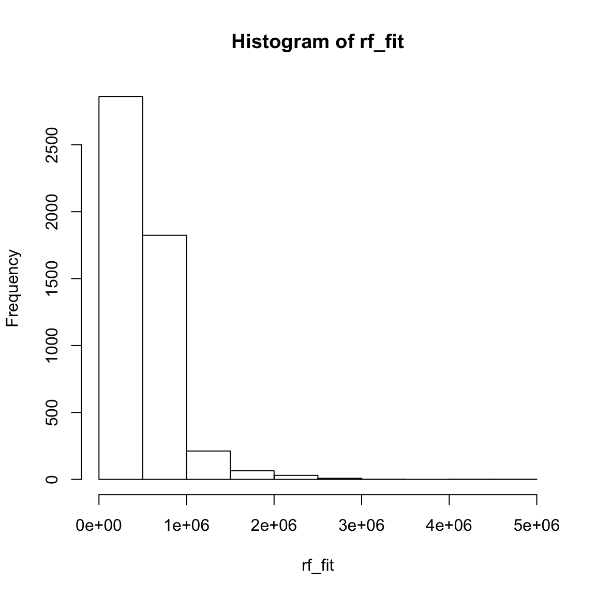
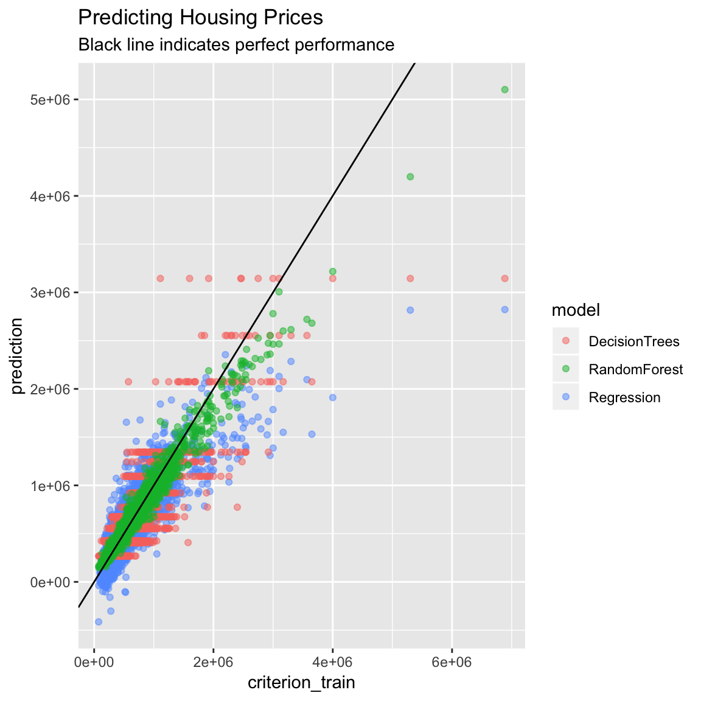
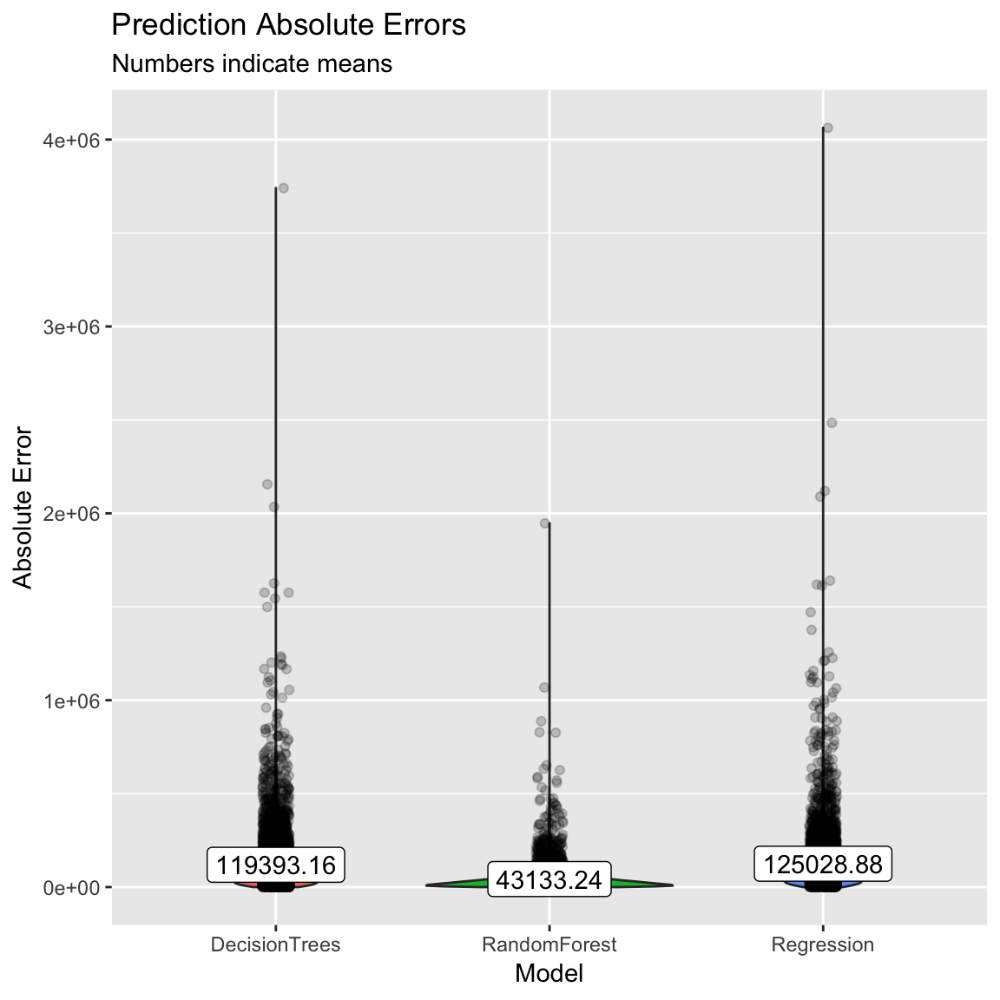

Prediction
|
Machine Learning with R Basel R Bootcamp |

|
from Medium.com

Overview
By the end of this practical you will know how to:
- Fit regression, decision trees and random forests to training data.
- Evaluate model fitting and prediction performance in a test set.
- Compare the fitting and prediction performance of two models.
- Explore the effects of features on model predictions.
Tasks
College Graduation Rates
In this section, we will again predict college graduation rates Grad_Rate from the college_train and college_test datasets.
A - Setup
Open your
BaselRBootcampR project. It should already have the folders1_Dataand2_Code. Make sure that the data file(s) listed in theDatasetssection are in your1_Datafolder.Open a new R script. At the top of the script, using comments, write your name and the date. Save it as a new file called
Prediction_College_practical.Rin the2_Codefolder.Using
library()load the set of packages for this practical listed in the packages section above.
# Load packages necessary for this script
library(tidyverse)
library(caret)
library(party)
library(partykit)- Run the code below to load each of the datasets listed in the
Datasetsas new objects.
# College data
college_train <- read_csv(file = "1_Data/college_train.csv")
college_test <- read_csv(file = "1_Data/college_test.csv")- Take a look at the first few rows of each dataframe by printing them to the console.
# Print dataframes to the console
college_train# A tibble: 500 x 18
Private Apps Accept Enroll Top10perc Top25perc F.Undergrad P.Undergrad
<chr> <dbl> <dbl> <dbl> <dbl> <dbl> <dbl> <dbl>
1 Yes 1202 1054 326 18 44 1410 299
2 Yes 1415 714 338 18 52 1345 44
3 Yes 4778 2767 678 50 89 2587 120
4 Yes 1220 974 481 28 67 1964 623
5 Yes 1981 1541 514 18 36 1927 1084
6 Yes 1217 1088 496 36 69 1773 884
7 No 8579 5561 3681 25 50 17880 1673
8 No 833 669 279 3 13 1224 345
9 No 10706 7219 2397 12 37 14826 1979
10 Yes 938 864 511 29 62 1715 103
# … with 490 more rows, and 10 more variables: Outstate <dbl>,
# Room.Board <dbl>, Books <dbl>, Personal <dbl>, PhD <dbl>,
# Terminal <dbl>, S.F.Ratio <dbl>, perc.alumni <dbl>, Expend <dbl>,
# Grad.Rate <dbl>college_test# A tibble: 277 x 18
Private Apps Accept Enroll Top10perc Top25perc F.Undergrad P.Undergrad
<chr> <dbl> <dbl> <dbl> <dbl> <dbl> <dbl> <dbl>
1 No 9251 7333 3076 14 45 13699 1213
2 Yes 1480 1257 452 6 25 2961 572
3 No 2336 1725 1043 10 27 5438 4058
4 Yes 1262 1102 276 14 40 978 98
5 Yes 959 771 351 23 48 1662 209
6 Yes 331 331 225 15 36 1100 166
7 Yes 804 632 281 29 72 840 68
8 No 285 280 208 21 43 1140 473
9 Yes 323 278 122 31 51 393 4
10 Yes 504 482 185 10 36 550 84
# … with 267 more rows, and 10 more variables: Outstate <dbl>,
# Room.Board <dbl>, Books <dbl>, Personal <dbl>, PhD <dbl>,
# Terminal <dbl>, S.F.Ratio <dbl>, perc.alumni <dbl>, Expend <dbl>,
# Grad.Rate <dbl>- Print the numbers of rows and columns of each dataset using the
dim()function.
# Print numbers of rows and columns
dim(XXX)
dim(XXX)dim(college_train)[1] 500 18dim(college_test)[1] 277 18- Look at the names of the dataframes with the
names()function.
# Print the names of each dataframe
names(XXX)
names(XXX)names(college_train) [1] "Private" "Apps" "Accept" "Enroll" "Top10perc"
[6] "Top25perc" "F.Undergrad" "P.Undergrad" "Outstate" "Room.Board"
[11] "Books" "Personal" "PhD" "Terminal" "S.F.Ratio"
[16] "perc.alumni" "Expend" "Grad.Rate" names(college_test) [1] "Private" "Apps" "Accept" "Enroll" "Top10perc"
[6] "Top25perc" "F.Undergrad" "P.Undergrad" "Outstate" "Room.Board"
[11] "Books" "Personal" "PhD" "Terminal" "S.F.Ratio"
[16] "perc.alumni" "Expend" "Grad.Rate" - Open each dataset in a new window using
View(). Do they look ok?
# Open each dataset in a window.
View(XXX)
View(XXX)- Again, We need to do a little bit of data cleaning. Specifically, we need to convert all character columns to factors: Do this by running the following code:
# Convert all character columns to factor
college_train <- college_train %>%
mutate_if(is.character, factor)
college_test <- college_test %>%
mutate_if(is.character, factor)B - Fitting
Your goal in this set of tasks is again to fit models predicting Grad.Rate, the percentage of attendees who graduate from each college.
- Using
trainControl(), set your training control method to"none". Save your object asctrl_none.
# Set training method to "none" for simple fitting
# Note: This is for demonstration purposes, you would almost
# never do this for a 'real' prediction task!
ctrl_none <- trainControl(method = "XXX")ctrl_none <- trainControl(method = "none")Regression
- Using
train()fit a regression model calledgrad_glmpredictingGrad.Rateas a function of all features. Specifically,…
- for the
formargument, useGrad.Rate ~ .. - for the
dataargument, usecollege_trainin the data argument. - for the
methodargument, usemethod = "glm"for regression. - for the
trControlargument, use yourctrl_noneobject you created before.
grad_glm <- train(form = XX ~ .,
data = XX,
method = "XXX",
trControl = ctrl_none)grad_glm <- train(form = Grad.Rate ~ .,
data = college_train,
method = "glm",
trControl = ctrl_none)- Explore your
grad_glmobject by looking atgrad_glm$finalModeland usingsummary(), what do you find?
grad_glm$XXX
summary(XXX)grad_glm$finalModel
Call: NULL
Coefficients:
(Intercept) PrivateYes Apps Accept Enroll
31.010972 1.701840 0.001926 -0.001754 0.005550
Top10perc Top25perc F.Undergrad P.Undergrad Outstate
-0.049727 0.206252 -0.001069 -0.001294 0.001782
Room.Board Books Personal PhD Terminal
0.000871 -0.000932 -0.001457 0.104743 -0.101789
S.F.Ratio perc.alumni Expend
0.275943 0.219944 -0.000683
Degrees of Freedom: 499 Total (i.e. Null); 482 Residual
Null Deviance: 142000
Residual Deviance: 74600 AIC: 3960summary(grad_glm)
Call:
NULL
Deviance Residuals:
Min 1Q Median 3Q Max
-38.10 -7.24 -0.58 7.51 47.10
Coefficients:
Estimate Std. Error t value Pr(>|t|)
(Intercept) 31.010972 5.911481 5.25 2.3e-07 ***
PrivateYes 1.701840 2.114677 0.80 0.42135
Apps 0.001926 0.000572 3.37 0.00082 ***
Accept -0.001754 0.001046 -1.68 0.09417 .
Enroll 0.005550 0.002872 1.93 0.05387 .
Top10perc -0.049727 0.086281 -0.58 0.56466
Top25perc 0.206252 0.066972 3.08 0.00219 **
F.Undergrad -0.001069 0.000461 -2.32 0.02068 *
P.Undergrad -0.001294 0.000444 -2.92 0.00369 **
Outstate 0.001782 0.000297 6.01 3.7e-09 ***
Room.Board 0.000871 0.000721 1.21 0.22790
Books -0.000932 0.004089 -0.23 0.81988
Personal -0.001457 0.000998 -1.46 0.14494
PhD 0.104743 0.071027 1.47 0.14095
Terminal -0.101789 0.076321 -1.33 0.18293
S.F.Ratio 0.275943 0.191423 1.44 0.15008
perc.alumni 0.219944 0.061576 3.57 0.00039 ***
Expend -0.000683 0.000202 -3.39 0.00077 ***
---
Signif. codes: 0 '***' 0.001 '**' 0.01 '*' 0.05 '.' 0.1 ' ' 1
(Dispersion parameter for gaussian family taken to be 155)
Null deviance: 141641 on 499 degrees of freedom
Residual deviance: 74595 on 482 degrees of freedom
AIC: 3960
Number of Fisher Scoring iterations: 2- Using
predict()save the fitted values ofgrad_glmobject asglm_fit.
# Save fitted values of regression model
glm_fit <- predict(XXX)glm_fit <- predict(grad_glm)- Print your
glm_fitobject, look at summary statistics withsummary(glm_fit), and create a histogram withhist()do they make sense?
# Explore regression model fits
XXX
summary(XXX)
hist(XXX)glm_fit[1:10] # Only printing first 10 1 2 3 4 5 6 7 8 9 10
71.8 56.4 91.8 62.9 69.2 68.5 57.4 52.0 57.4 71.0 summary(glm_fit) Min. 1st Qu. Median Mean 3rd Qu. Max.
33.0 57.3 64.1 65.6 73.3 102.8 hist(glm_fit)
Decision Trees
- Using
train(), fit a decision tree model calledgrad_rpart. Specifically,…
- for the
formargument, useGrad.Rate ~ .. - for the
dataargument, usecollege_train. - for the
methodargument, usemethod = "rpart"to create decision trees. - for the
trControlargument, use yourctrl_noneobject you created before. - for the
tuneGridargument, usecp = 0.01to specify the value of the complexity parameter. This is a pretty low value which means your trees will be, relatively, complex, i.e., deep.
grad_rpart <- train(form = XX ~ .,
data = XXX,
method = "XX",
trControl = XX,
tuneGrid = expand.grid(cp = XX)) # Set complexity parametergrad_rpart <- train(form = Grad.Rate ~ .,
data = college_train,
method = "rpart",
trControl = ctrl_none,
tuneGrid = expand.grid(cp = .01)) # Set complexity parameter- Explore your
grad_rpartobject by looking atgrad_rpart$finalModeland plotting it withplot(as.party(grad_rpart$finalModel)), what do you find?
grad_rpart$finalModeln= 500
node), split, n, deviance, yval
* denotes terminal node
1) root 500 142000 65.6
2) Outstate< 1.06e+04 292 69000 58.0
4) Top25perc< 47.5 135 34100 53.3
8) Outstate< 8.56e+03 86 20000 48.9
16) Expend>=6.97e+03 26 6430 41.9 *
17) Expend< 6.97e+03 60 11700 52.0
34) Books>=388 53 9310 50.0 *
35) Books< 388 7 639 66.7 *
9) Outstate>=8.56e+03 49 9520 61.1 *
5) Top25perc>=47.5 157 29600 61.9
10) Top10perc< 51.5 147 26100 61.0
20) perc.alumni< 24.5 110 16700 58.9 *
21) perc.alumni>=24.5 37 7500 67.2 *
11) Top10perc>=51.5 10 1570 75.3 *
3) Outstate>=1.06e+04 208 31500 76.4
6) Outstate< 1.68e+04 158 21500 73.3
12) perc.alumni< 22.5 55 8180 68.7 *
13) perc.alumni>=22.5 103 11500 75.8
26) F.Undergrad< 1.42e+03 55 4770 71.2 *
27) F.Undergrad>=1.42e+03 48 4200 81.1 *
7) Outstate>=1.68e+04 50 4040 85.9 *plot(as.party(grad_rpart$finalModel))
- Using
predict(), save the fitted values ofgrad_rpartobject asrpart_predfit.
# Save fitted values of decision tree model
rpart_predfit <- predict(XXX)rpart_predfit <- predict(grad_rpart)- Print your
rpart_predfitobject, look at summary statistics withsummary(rpart_predfit), and create a histogram withhist(). Do they make sense?
# Explore decision tree fits
XXX
summary(XXX)
hist(XXX)rpart_predfit[1:10] # Only first 10 1 2 3 4 5 6 7 8 9 10
71.2 58.9 85.9 58.9 68.7 81.1 58.9 50.0 50.0 81.1 summary(rpart_predfit) Min. 1st Qu. Median Mean 3rd Qu. Max.
41.9 58.9 67.2 65.6 71.2 85.9 hist(rpart_predfit)
Random Forests
- Using
train(), fit a random forest model calledgrad_rf. Speicifically,…
- for the
formargument, useGrad.Rate ~ .. - for the
dataargument, usecollege_train. - for the
methodargument, usemethod = "rf"to fit random forests. - for the
trControlargument, use yourctrl_noneobject you created before. - for the
mtryparameter, usemtry= 2. This is a relatively low value, so the forest will be very diverse.
grad_rf <- train(form = XX ~ ., # Predict grad
data = XX,
method = "XX",
trControl = XX,
tuneGrid = expand.grid(mtry = XX)) # Set number of features randomly selectedgrad_rf <- train(form = Grad.Rate ~ ., # Predict grad
data = college_train,
method = "rf",
trControl = ctrl_none,
tuneGrid = expand.grid(mtry = 2)) # Set number of features randomly selected- Using
predict(), save the fitted values ofgrad_rfobject asrf_fit.
# Save fitted values of random forest model
rf_fit <- predict(XXX)rf_fit <- predict(grad_rf)- Print your
rf_fitobject, look at summary statistics withsummary(rf_fit), and create a histogram withhist(). Do they make sense?
# Explore random forest fits
XXX
summary(XXX)
hist(XXX)rf_fit[1:10] # Only first 10 1 2 3 4 5 6 7 8 9 10
68.6 64.1 85.1 55.8 76.1 67.3 58.0 43.6 58.5 72.6 summary(rf_fit) Min. 1st Qu. Median Mean 3rd Qu. Max.
31.4 56.7 65.7 65.6 74.9 96.8 hist(rf_fit)
Assess accuracy
- Save the true training criterion values (
college_train$Grad.Rate) as a vector calledcriterion_train.
# Save training criterion values
criterion_train <- XXX$XXXcriterion_train <- college_train$Grad.Rate- Using
postResample(), determine the fitting performance of each of your models separately. Make sure to set yourcriterion_trainvalues to theobsargument, and your true model fitsXX_fitto thepredargument.
# Calculate fitting accuracies of each model
# pred = XX_fit
# obs = criterion_train
# Regression
postResample(pred = XXX, obs = XXX)
# Decision Trees
postResample(pred = XXX, obs = XXX)
# Random Forests
postResample(pred = XXX, obs = XXX)# Regression
postResample(pred = glm_fit, obs = criterion_train) RMSE Rsquared MAE
12.214 0.473 9.250 # Decision Trees
postResample(pred = rpart_predfit, obs = criterion_train) RMSE Rsquared MAE
12.072 0.486 9.536 # Random Forests
postResample(pred = rf_fit, obs = criterion_train) RMSE Rsquared MAE
5.736 0.928 4.346 - Which one had the best fit? What was the fitting MAE of each model?
(Optional). If you’d like to, try visualizing the fitting results using the plotting code shown in the Examples tab above. Ask for help if you need it!
accuracy <- tibble(criterion_train = criterion_train,
Regression = glm_fit,
DecisionTrees = rpart_predfit,
RandomForest = rf_fit) %>%
gather(model, prediction, -criterion_train) %>%
# Add error measures
mutate(se = prediction - criterion_train,
ae = abs(prediction - criterion_train))
# Calculate summaries
accuracy_agg <- accuracy %>%
group_by(model) %>%
summarise(mae = mean(ae)) # Calculate MAE (mean absolute error)
# Plot A) Scatterplot of truth versus predictions
ggplot(data = accuracy,
aes(x = criterion_train, y = prediction)) +
geom_point(alpha = .5) +
geom_abline(slope = 1, intercept = 0) +
facet_wrap(~ model) +
labs(title = "Predicting college_train$Grad.Rate",
subtitle = "Black line indicates perfect performance")
# Plot B) Violin plot of absolute errors
ggplot(data = accuracy,
aes(x = model, y = ae, fill = model)) +
geom_violin() +
geom_jitter(width = .05, alpha = .2) +
labs(title = "Prediction Absolute Errors",
subtitle = "Numbers indicate means",
x = "Model",
y = "Absolute Error") +
guides(fill = FALSE) +
annotate(geom = "label",
x = accuracy_agg$model,
y = accuracy_agg$mae,
label = round(accuracy_agg$mae, 2))
C - Prediction
- Save the criterion values from the test data set
college_test$Grad.Rateas a new vector calledcriterion_test.
# Save criterion values
criterion_test <- XXX$XXX# Save criterion values
criterion_test <- college_test$Grad.Rate- Using
predict(), save the predicted values of each model for the test datacollege_testasglm_pred,rpart_predandrf_pred.
# Save model predictions for test data
# newdata = college_test
# Regression
glm_pred <- predict(XXX, newdata = XXX)
# Decision Trees
rpart_pred <- predict(XXX, newdata = XXX)
# Random Forests
rf_pred <- predict(XXX, newdata = XXX)# Save model predictions for test data
# newdata = college_test
# Regression
glm_pred <- predict(grad_glm, newdata = college_test)
# Decision Trees
rpart_pred <- predict(grad_rpart, newdata = college_test)
# Random Forests
rf_pred <- predict(grad_rf, newdata = college_test)- Using
postResample(), determine the prediction performance of each of your models against the test criterioncriterion_test.
# Calculate prediction accuracies of each model
# obs = criterion_test
# pred = XX_pred
# Regression
postResample(pred = XXX, obs = XXX)
# Decision Trees
postResample(pred = XXX, obs = XXX)
# Random Forests
postResample(pred = XXX, obs = XXX)# Calculate prediction accuracies of each model
# obs = criterion_test
# pred = XX_pred
# Regression
postResample(pred = glm_pred, obs = criterion_test) RMSE Rsquared MAE
13.727 0.404 9.964 # Decision Trees
postResample(pred = rpart_pred, obs = criterion_test) RMSE Rsquared MAE
14.741 0.321 11.104 # Random Forests
postResample(pred = rf_pred, obs = criterion_test) RMSE Rsquared MAE
13.25 0.46 9.75 - How does each model’s prediction or test performance (on the
XXX_testdata) compare to its fitting or training performance (on theXXX_traindata)? Is it worse? Better? The same? What does the change tell you about the models?
# The regression goodness of fit stayed the most constant. The random forest one droped considerably.- Which of the three models has the best prediction performance?
# The random forest predictions are still the most accurate.If you had to use one of these three models in the real-world, which one would it be? Why?
If someone came to you and asked “If I use your model in the future to predict the graduation rate of a new college, how accurate do you think it would be?”, what would you say?
House Prices in King County, Washington
In this section, we will work with a different data set. Specifically, we will predict the prices of houses in King County Washington (home of Seattle, which you can thank for this) using the house_train and house_test datasets.
D - Setup
Make sure you are still working in your
BaselRBootcampR project, with the folders1_Dataand2_Code. Make sure that the data file(s) listed in theDatasetssection above are in your1_DatafolderOpen a new R script. At the top of the script, using comments, write your name and the date. Save it as a new file called
Prediction_HousePrices_practical.Rin the2_Codefolder.Using
library()load the set of packages for this practical listed in the packages section above.
# Load packages necessary for this script
library(tidyverse)
library(caret)
library(party)
library(partykit)- Run the code below to load each of the datasets listed in the
Datasetsas new objects.
# house data
house_train <- read_csv(file = "1_Data/house_train.csv")
house_test <- read_csv(file = "1_Data/house_test.csv")Take a look at the first few rows of each dataframe by printing them to the console.
Print the numbers of rows and columns of each dataset using the
dim()function.
# Print numbers of rows and columns
dim(XXX)
dim(XXX)- Look at the names of the dataframes with the
names()function.
# Print the names of each dataframe
names(XXX)
names(XXX)- Open each dataset in a new window using
View(). Do they look ok?
# Open each dataset in a window.
View(XXX)
View(XXX)- Again, we need to do a little bit of data cleaning. Convert all character columns to factor.
# Convert all character columns to factor
house_train <- house_train %>%
mutate_if(is.character, factor)
house_test <- house_test %>%
mutate_if(is.character, factor)E - Fitting
Your goal in the following models is to predict price, the selling price of homes in King County WA.
- Using
trainControl(), set your training control method to"none". Save your object asctrl_none.
# Set training method to "none" for simple fitting
# Note: This is for demonstration purposes, you would almost
# never do this for a 'real' prediction task!
ctrl_none <- trainControl(method = "XXX")ctrl_none <- trainControl(method = "none")Regression
- Using
train(), fit a regression model calledprice_glmpredictingpriceusing all features inhouse_train. Specifically,…
- for the
formargument, useprice ~ .. - for the
dataargument, usehouse_train. - for the
methodargument, usemethod = "glm"for regression. - for the
trControlargument, use yourctrl_noneobject you created before.
price_glm <- train(form = XX ~ .,
data = XX,
method = "XXX",
trControl = ctrl_none)price_glm <- train(form = price ~ .,
data = house_train,
method = "glm",
trControl = ctrl_none)- Explore your
price_glmobject by looking atprice_glm$finalModeland usingsummary(). What do you find?
price_glm$XXX
summary(XXX)price_glm$finalModel
Call: NULL
Coefficients:
(Intercept) bedrooms bathrooms sqft_living sqft_lot
1.07e+05 -4.64e+04 5.35e+04 1.47e+02 2.31e-01
floors waterfront view condition grade
5.03e+03 6.40e+05 5.84e+04 3.03e+04 9.74e+04
sqft_above sqft_basement yr_built yr_renovated zipcode
2.40e+01 NA -2.61e+03 4.31e+00 -5.42e+02
lat long sqft_living15 sqft_lot15
6.14e+05 -2.32e+05 2.71e+01 -2.63e-01
Degrees of Freedom: 4999 Total (i.e. Null); 4982 Residual
Null Deviance: 6.81e+14
Residual Deviance: 2.02e+14 AIC: 136000summary(price_glm)
Call:
NULL
Deviance Residuals:
Min 1Q Median 3Q Max
-1114590 -98269 -10834 76308 4063119
Coefficients: (1 not defined because of singularities)
Estimate Std. Error t value Pr(>|t|)
(Intercept) 1.07e+05 6.13e+06 0.02 0.98603
bedrooms -4.64e+04 4.14e+03 -11.19 < 2e-16 ***
bathrooms 5.35e+04 7.00e+03 7.65 2.4e-14 ***
sqft_living 1.47e+02 9.33e+00 15.73 < 2e-16 ***
sqft_lot 2.31e-01 1.02e-01 2.26 0.02360 *
floors 5.03e+03 7.62e+03 0.66 0.50982
waterfront 6.40e+05 3.53e+04 18.14 < 2e-16 ***
view 5.84e+04 4.52e+03 12.94 < 2e-16 ***
condition 3.03e+04 4.82e+03 6.28 3.6e-10 ***
grade 9.74e+04 4.43e+03 21.99 < 2e-16 ***
sqft_above 2.40e+01 9.25e+00 2.60 0.00935 **
sqft_basement NA NA NA NA
yr_built -2.61e+03 1.54e+02 -16.92 < 2e-16 ***
yr_renovated 4.31e+00 7.99e+00 0.54 0.58986
zipcode -5.42e+02 6.84e+01 -7.92 3.0e-15 ***
lat 6.14e+05 2.25e+04 27.28 < 2e-16 ***
long -2.32e+05 2.71e+04 -8.55 < 2e-16 ***
sqft_living15 2.71e+01 7.12e+00 3.81 0.00014 ***
sqft_lot15 -2.63e-01 1.60e-01 -1.64 0.10008
---
Signif. codes: 0 '***' 0.001 '**' 0.01 '*' 0.05 '.' 0.1 ' ' 1
(Dispersion parameter for gaussian family taken to be 4.06e+10)
Null deviance: 6.8104e+14 on 4999 degrees of freedom
Residual deviance: 2.0203e+14 on 4982 degrees of freedom
AIC: 136339
Number of Fisher Scoring iterations: 2- Using
predict(), save the fitted values ofprice_glmobject asglm_fit.
# Save fitted values of regression model
glm_fit <- predict(XXX)# Save fitted values of regression model
glm_fit <- predict(price_glm)- Print your
glm_fitobject, look at summary statistics withsummary(glm_fit), and create a histogram withhist(). Do they make sense?
# Explore regression model fits
XXX
summary(XXX)
hist(XXX)glm_fit[1:10] # Only first 10 1 2 3 4 5 6 7 8 9 10
47648 276160 927614 95201 553709 590318 669722 581335 -2308 654493 summary(glm_fit) Min. 1st Qu. Median Mean 3rd Qu. Max.
-414135 335260 487481 536998 672715 2821881 hist(glm_fit)
Decision Trees
- Using
train(), fit a decision tree model calledprice_rpartpredictingpriceusing all features inhouse_train. Specifically,…
- for the
formargument, useprice ~ .. - for the
dataargument, usehouse_train. - for the
methodargument, usemethod = "rpart"to create decision trees. - for the
trControlargument, use yourctrl_noneobject you created before. - for the
tuneGridargument, usecp = 0.01to specify the value of the complexity parameter. This is a pretty low value which means your trees will be, relatively, complex.
price_rpart <- train(form = XX ~ .,
data = XXX,
method = "XX",
trControl = XX,
tuneGrid = expand.grid(cp = XX)) # Set complexity parameterprice_rpart <- train(form = price ~ .,
data = house_train,
method = "rpart",
trControl = ctrl_none,
tuneGrid = expand.grid(cp = .01)) # Set complexity parameter- Explore your
price_rpartobject by looking atprice_rpart$finalModeland plotting it withplot(as.party(price_rpart$finalModel)). What do you find?
price_rpart$finalModeln= 5000
node), split, n, deviance, yval
* denotes terminal node
1) root 5000 6.81e+14 537000
2) sqft_living< 3.40e+03 4596 2.49e+14 475000
4) lat< 47.5 1805 2.85e+13 324000
8) sqft_living< 1.95e+03 1075 6.91e+12 268000 *
9) sqft_living>=1.95e+03 730 1.31e+13 408000 *
5) lat>=47.5 2791 1.53e+14 572000
10) sqft_living< 2.28e+03 1981 5.01e+13 492000
20) sqft_living< 1.53e+03 947 1.57e+13 425000 *
21) sqft_living>=1.53e+03 1034 2.62e+13 554000 *
11) sqft_living>=2.28e+03 810 5.91e+13 767000
22) grade< 8.5 450 1.64e+13 675000 *
23) grade>=8.5 360 3.39e+13 883000
46) long>=-122 237 8.10e+12 774000 *
47) long< -122 123 1.76e+13 1090000 *
3) sqft_living>=3.40e+03 404 2.12e+14 1250000
6) sqft_living< 6.28e+03 393 1.42e+14 1190000
12) waterfront< 0.5 378 1.10e+14 1140000
24) grade< 10.5 287 5.38e+13 1010000
48) lat< 47.5 65 1.74e+12 626000 *
49) lat>=47.5 222 3.99e+13 1120000
98) long>=-122 119 4.78e+12 922000 *
99) long< -122 103 2.53e+13 1340000 *
25) grade>=10.5 91 3.55e+13 1550000
50) long>=-122 57 6.47e+12 1250000 *
51) long< -122 34 1.44e+13 2070000 *
13) waterfront>=0.5 15 3.52e+12 2550000 *
7) sqft_living>=6.28e+03 11 2.85e+13 3140000 *plot(as.party(price_rpart$finalModel))
- Using
predict()save the fitted values ofprice_rpartobject asrpart_predfit.
# Save fitted values of decision tree model
rpart_predfit <- predict(XXX)rpart_predfit <- predict(price_rpart)- Print your
rpart_predfitobject, look at summary statistics withsummary(rpart_predfit), and create a histogram withhist(). Do they make sense?
# Explore decision tree fits
XXX
summary(XXX)
hist(XXX)rpart_predfit[1:10] # Only first 10 values 1 2 3 4 5 6 7 8 9 10
267637 267637 921645 267637 553958 553958 407649 553958 267637 674757 summary(rpart_predfit) Min. 1st Qu. Median Mean 3rd Qu. Max.
267637 407649 424548 536998 553958 3144305 hist(rpart_predfit)
Random Forests
- Using
train(), fit a random forest model calledprice_rfpredictingpriceusing all features inhouse_train. Specifically,…
- for the
formargument, useprice ~ .. - for the
dataargument, usehouse_trainin the data argument. - for the
methodargument, usemethod = "rf"to fit random forests. - for the
trControlargument, use yourctrl_noneobject you created before. - for the
mtryparameter, usemtry= 2. This is a relatively low value, so the forest will be very diverse.
price_rf <- train(form = XX ~ .,
data = XX,
method = "XX",
trControl = XX,
tuneGrid = expand.grid(mtry = XX)) # Set number of features randomly selectedprice_rf <- train(form = price ~ .,
data = house_train,
method = "rf",
trControl = ctrl_none,
tuneGrid = expand.grid(mtry = 2)) # Set number of features randomly selected- Using
predict()save the fitted values ofprice_rfobject asrf_fit.
# Save fitted values of random forest model
rf_fit <- predict(XXX)rf_fit <- predict(price_rf)- Print your
rf_fitobject, look at summary statistics withsummary(rf_fit), and create a histogram withhist(). Do they make sense?
# Explore random forest fits
XXX
summary(XXX)
hist(XXX)rf_fit[1:10] # Only first 10 cases 1 2 3 4 5 6 7 8 9 10
193646 350467 843468 155702 557295 630406 641819 446730 216202 674959 summary(rf_fit) Min. 1st Qu. Median Mean 3rd Qu. Max.
149191 337506 461193 536631 631200 5081078 hist(rf_fit)
Assess accuracy
- Save the true training criterion values (
house_train$price) as a vector calledcriterion_train.
# Save training criterion values
criterion_train <- XXX$XXXcriterion_train <- house_train$price- Using
postResample(), determine the fitting performance of each of your models separately. Make sure to set yourcriterion_trainvalues to theobsargument, and your true model fitsXX_fitto thepredargument.
# Calculate fitting accuracies of each model
# pred = XX_fit
# obs = criterion_train
# Regression
postResample(pred = XXX, obs = XXX)
# Decision Trees
postResample(pred = XXX, obs = XXX)
# Random Forests
postResample(pred = XXX, obs = XXX)# Calculate fitting accuracies of each model
# pred = XX_fit
# obs = criterion_train
# Regression
postResample(pred = glm_fit, obs = criterion_train) RMSE Rsquared MAE
2.01e+05 7.03e-01 1.25e+05 # Decision Trees
postResample(pred = rpart_predfit, obs = criterion_train) RMSE Rsquared MAE
1.94e+05 7.23e-01 1.19e+05 # Random Forests
postResample(pred = rf_fit, obs = criterion_train) RMSE Rsquared MAE
7.86e+04 9.67e-01 4.35e+04 - Which one had the best fits? What was the fitting MAE of each model?
(Optional). If you’d like to, try visualizing the fitting results using the plotting code shown in the Examples tab above. Ask for help if you need it!
# Tidy competition results
accuracy <- tibble(criterion_train = criterion_train,
Regression = glm_fit,
DecisionTrees = rpart_predfit,
RandomForest = rf_fit) %>%
gather(model, prediction, -criterion_train) %>%
# Add error measures
mutate(se = prediction - criterion_train,
ae = abs(prediction - criterion_train))
# Calculate summaries
accuracy_agg <- accuracy %>%
group_by(model) %>%
summarise(mae = mean(ae)) # Calculate MAE (mean absolute error)
# Plot A) Scatterplot of truth versus predictions
ggplot(data = accuracy,
aes(x = criterion_train, y = prediction, col = model)) +
geom_point(alpha = .5) +
geom_abline(slope = 1, intercept = 0) +
labs(title = "Predicting Housing Prices",
subtitle = "Black line indicates perfect performance")
# Plot B) Violin plot of absolute errors
ggplot(data = accuracy,
aes(x = model, y = ae, fill = model)) +
geom_violin() +
geom_jitter(width = .05, alpha = .2) +
labs(title = "Prediction Absolute Errors",
subtitle = "Numbers indicate means",
x = "Model",
y = "Absolute Error") +
guides(fill = FALSE) +
annotate(geom = "label",
x = accuracy_agg$model,
y = accuracy_agg$mae,
label = round(accuracy_agg$mae, 2))
F - Prediction
- Save the criterion values from the test data set
house_test$priceas a new vector calledcriterion_test.
# Save criterion values
criterion_test <- XXX$XXXcriterion_test <- house_test$price- Using
predict(), save the predicted values of each model for the test datahouse_testasglm_pred,rpart_predandrf_pred.
# Save model predictions for test data
# object: price_XXX
# newdata: house_test
# Regression
glm_pred <- predict(XXX, newdata = XXX)
# Decision Trees
rpart_pred <- predict(XXX, newdata = XXX)
# Random Forests
rf_pred <- predict(XXX, newdata = XXX)# Regression
glm_pred <- predict(price_glm,
newdata = house_test)
# Decision Trees
rpart_pred <- predict(price_rpart,
newdata = house_test)
# Random Forests
rf_pred <- predict(price_rf,
newdata = house_test)- Using
postResample(), determine the prediction performance of each of your models against the test criterioncriterion_test.
# Calculate prediction accuracies of each model
# obs = criterion_test
# pred = XX_pred
# Regression
postResample(pred = XXX, obs = XXX)
# Decision Trees
postResample(pred = XXX, obs = XXX)
# Random Forests
postResample(pred = XXX, obs = XXX)# Regression
postResample(pred = glm_pred, obs = criterion_test) RMSE Rsquared MAE
1.92e+05 7.03e-01 1.26e+05 # Decision Trees
postResample(pred = rpart_pred, obs = criterion_test) RMSE Rsquared MAE
1.84e+05 7.25e-01 1.22e+05 # Random Forests
postResample(pred = rf_pred, obs = criterion_test) RMSE Rsquared MAE
1.41e+05 8.58e-01 8.05e+04 How does each model’s prediction or test performance (on the
XXX_testdata) compare to its fitting or training performance (on theXXX_traindata)? Is it worse? Better? The same? What does the change tell you about the models?Which of the three models has the best prediction performance?
If you had to use one of these three models in the real-world, which one would it be? Why?
If someone came to you and asked “If I use your model in the future to predict the price of a new house, how accurate do you think it would be?”, what would you say?
G - Exploring model tuning parameters
In all of your decision tree models so far, you have been setting the complexity parameter to 0.01. Try setting it to a larger value of 0.2 and see how your decision trees change (by plotting them using
plot(as.party(XXX_rpart$finalModel))). Do they get more or less complicated? How does increasing this value affect fitting and prediction performance? If you are interested in learning more about this parameter, look at the help menu with?rpart.control.In each of your random forest models, you have been setting the
mtryargument to 2. Try setting it to a larger value such as 5 and re-run your models. How does increasing this value affect fitting and prediction performance? If you are interested in learning more about this parameter, look at the help menu with?randomForest.By default, the
train()function uses 500 trees formethod = "rf". How do the number of trees affect performance? To answer this, try setting the number of trees to 1,000 (see example below) and re-evaluating your model’s training and test performance. What do you find? What if you set the number of trees to just 10?
# Create random forest model with 1000 trees
mod <- train(form = price ~ .l,
data = house_train,
method = "rf",
trControl = ctrl_none,
ntree = 1000, # use 1000 trees! (Instead of the default value of 500)
tuneGrid = expand.grid(mtry = 2))Z - Challenges
- So far you’ve probably been using most, if not all, available features in predicting house sales. But imagine someone came to you and said "I need to know how much a set of new houses will sell for, but I only have access to three features
bedrooms,bathrooms, andsqft_living. Which of your models should I use and how accurate will they be? How would you answer that question? Use your modelling techniques to find out!
price_glm <- train(form = price ~ bedrooms + bathrooms + sqft_living,
data = house_train,
method = "glm",
trControl = ctrl_none)
glm_fit <- predict(price_glm)
price_rpart <- train(form = price ~ bedrooms + bathrooms + sqft_living,
data = house_train,
method = "rpart",
trControl = ctrl_none,
tuneGrid = expand.grid(cp = .01))
rpart_predfit <- predict(price_rpart)
price_rf <- train(form = price ~ bedrooms + bathrooms + sqft_living,
data = house_train,
method = "rf",
trControl = ctrl_none,
tuneGrid = expand.grid(mtry = 2))
rf_fit <- predict(price_rf)
# Get goodness of fit indices for training set
# Regression
postResample(pred = glm_fit, obs = criterion_train) RMSE Rsquared MAE
2.63e+05 4.92e-01 1.72e+05 # Decision Trees
postResample(pred = rpart_predfit, obs = criterion_train) RMSE Rsquared MAE
2.58e+05 5.13e-01 1.69e+05 # Random Forests
postResample(pred = rf_fit, obs = criterion_train) RMSE Rsquared MAE
1.76e+05 7.82e-01 1.22e+05 # Get predictions
# Regression
glm_pred <- predict(price_glm,
newdata = house_test)
# Decision Trees
rpart_pred <- predict(price_rpart,
newdata = house_test)
# Random Forests
rf_pred <- predict(price_rf,
newdata = house_test)
# Get goodness of fit indices for test sets
# Regression
postResample(pred = glm_pred, obs = criterion_test) RMSE Rsquared MAE
2.51e+05 4.91e-01 1.68e+05 # Decision Trees
postResample(pred = rpart_pred, obs = criterion_test) RMSE Rsquared MAE
2.47e+05 5.06e-01 1.64e+05 # Random Forests
postResample(pred = rf_pred, obs = criterion_test) RMSE Rsquared MAE
2.52e+05 5.01e-01 1.67e+05 - Repeat your modelling process, but now do a classification task. Specifically, predict whether or not a house sells for at least $1,000,000. To do this, you’ll first need to create a new column called
millionin both yourhouse_trainandhouse_testdatasets (the code below should help you). Then, use your best modelling techniques to make this prediction. How accurate are your models in predicting whether or not a house will sell for over $1,000,000? Don’t forget to use theconfusionMatrix()function instead ofpostResample()to evaluate your model’s accuracy!
# Add million column to house_train and house_test
# A factor indicating whether or not a house sells for
# over 1,000,0000
house_train <- house_train %>%
mutate(million = factor(price > 1000000))
house_test <- house_test %>%
mutate(million = factor(price > 1000000))million_glm <- train(form = million ~ . -price,
data = house_train,
method = "glm",
trControl = ctrl_none)
glm_fit <- predict(million_glm)
million_rpart <- train(form = million ~ . -price,
data = house_train,
method = "rpart",
trControl = ctrl_none,
tuneGrid = expand.grid(cp = .01))
rpart_predfit <- predict(million_rpart)
million_rf <- train(form = million ~ . -price,
data = house_train,
method = "rf",
trControl = ctrl_none,
tuneGrid = expand.grid(mtry = 2))
rf_fit <- predict(million_rf)
criterion_train <- house_train$million
# Get goodness of fit indices for training set
# Regression
confusionMatrix(data = glm_fit, # This is the prediction!
reference = criterion_train) # This is the truth!Confusion Matrix and Statistics
Reference
Prediction FALSE TRUE
FALSE 4618 125
TRUE 54 203
Accuracy : 0.964
95% CI : (0.959, 0.969)
No Information Rate : 0.934
P-Value [Acc > NIR] : < 2e-16
Kappa : 0.675
Mcnemar's Test P-Value : 1.68e-07
Sensitivity : 0.988
Specificity : 0.619
Pos Pred Value : 0.974
Neg Pred Value : 0.790
Prevalence : 0.934
Detection Rate : 0.924
Detection Prevalence : 0.949
Balanced Accuracy : 0.804
'Positive' Class : FALSE
# Decision Trees
confusionMatrix(data = rpart_predfit, # This is the prediction!
reference = criterion_train) # This is the truth!Confusion Matrix and Statistics
Reference
Prediction FALSE TRUE
FALSE 4609 72
TRUE 63 256
Accuracy : 0.973
95% CI : (0.968, 0.977)
No Information Rate : 0.934
P-Value [Acc > NIR] : <2e-16
Kappa : 0.777
Mcnemar's Test P-Value : 0.491
Sensitivity : 0.987
Specificity : 0.780
Pos Pred Value : 0.985
Neg Pred Value : 0.803
Prevalence : 0.934
Detection Rate : 0.922
Detection Prevalence : 0.936
Balanced Accuracy : 0.884
'Positive' Class : FALSE
# Random Forests
confusionMatrix(data = rf_fit, # This is the prediction!
reference = criterion_train) # This is the truth!Confusion Matrix and Statistics
Reference
Prediction FALSE TRUE
FALSE 4672 0
TRUE 0 328
Accuracy : 1
95% CI : (0.999, 1)
No Information Rate : 0.934
P-Value [Acc > NIR] : <2e-16
Kappa : 1
Mcnemar's Test P-Value : NA
Sensitivity : 1.000
Specificity : 1.000
Pos Pred Value : 1.000
Neg Pred Value : 1.000
Prevalence : 0.934
Detection Rate : 0.934
Detection Prevalence : 0.934
Balanced Accuracy : 1.000
'Positive' Class : FALSE
# Get predictions
# Regression
glm_pred <- predict(million_glm,
newdata = house_test)
# Decision Trees
rpart_pred <- predict(million_rpart,
newdata = house_test)
# Random Forests
rf_pred <- predict(million_rf,
newdata = house_test)
# Get goodness of fit indices for test sets
# create test criterion
criterion_test <- house_test$million
# Regression
confusionMatrix(data = glm_pred, # This is the prediction!
reference = criterion_test) # This is the truth!Confusion Matrix and Statistics
Reference
Prediction FALSE TRUE
FALSE 927 23
TRUE 10 40
Accuracy : 0.967
95% CI : (0.954, 0.977)
No Information Rate : 0.937
P-Value [Acc > NIR] : 1.49e-05
Kappa : 0.691
Mcnemar's Test P-Value : 0.0367
Sensitivity : 0.989
Specificity : 0.635
Pos Pred Value : 0.976
Neg Pred Value : 0.800
Prevalence : 0.937
Detection Rate : 0.927
Detection Prevalence : 0.950
Balanced Accuracy : 0.812
'Positive' Class : FALSE
# Decision Trees
confusionMatrix(data = rpart_pred, # This is the prediction!
reference = criterion_test) # This is the truth!Confusion Matrix and Statistics
Reference
Prediction FALSE TRUE
FALSE 923 14
TRUE 14 49
Accuracy : 0.972
95% CI : (0.96, 0.981)
No Information Rate : 0.937
P-Value [Acc > NIR] : 3.14e-07
Kappa : 0.763
Mcnemar's Test P-Value : 1
Sensitivity : 0.985
Specificity : 0.778
Pos Pred Value : 0.985
Neg Pred Value : 0.778
Prevalence : 0.937
Detection Rate : 0.923
Detection Prevalence : 0.937
Balanced Accuracy : 0.881
'Positive' Class : FALSE
# Random Forests
confusionMatrix(data = rf_pred, # This is the prediction!
reference = criterion_test) # This is the truth!Confusion Matrix and Statistics
Reference
Prediction FALSE TRUE
FALSE 936 27
TRUE 1 36
Accuracy : 0.972
95% CI : (0.96, 0.981)
No Information Rate : 0.937
P-Value [Acc > NIR] : 3.14e-07
Kappa : 0.706
Mcnemar's Test P-Value : 2.31e-06
Sensitivity : 0.999
Specificity : 0.571
Pos Pred Value : 0.972
Neg Pred Value : 0.973
Prevalence : 0.937
Detection Rate : 0.936
Detection Prevalence : 0.963
Balanced Accuracy : 0.785
'Positive' Class : FALSE
Examples
# Fitting and evaluating regression, decision trees, and random forests
# Step 0: Load packages-----------
library(tidyverse) # Load tidyverse for dplyr and tidyr
library(caret) # For ML mastery
library(partykit) # For decision trees
library(party) # For decision trees
# Step 1: Load and Clean, and Explore Training data ----------------------
# training data
data_train <- read_csv("1_Data/mpg_train.csv")
# test data
data_test <- read_csv("1_Data/mpg_test.csv")
# Convert all characters to factor
# Some ML models require factors
data_train <- data_train %>%
mutate_if(is.character, factor)
data_test <- data_test %>%
mutate_if(is.character, factor)
# Explore training data
data_train # Print the dataset
View(data_train) # Open in a new spreadsheet-like window
dim(data_train) # Print dimensions
names(data_train) # Print the names
# Define criterion_train
# We'll use this later to evaluate model accuracy
criterion_train <- data_train$hwy
# Step 2: Define training control parameters -------------
# In this case, I will set method = "none" to fit to
# the entire dataset without any fancy methods
ctrl_none <- trainControl(method = "none")
# Step 3: Train model: -----------------------------
# Criterion: hwy
# Features: year, cyl, displ
# Regression --------------------------
hwy_glm <- train(form = hwy ~ year + cyl + displ,
data = data_train,
method = "glm",
trControl = ctrl_none)
# Look at summary information
hwy_glm$finalModel
summary(hwy_glm)
# Save fitted values
glm_fit <- predict(hwy_glm)
# Calculate fitting accuracies
postResample(pred = glm_fit,
obs = criterion_train)
# Decision Trees ----------------
hwy_rpart <- train(form = hwy ~ year + cyl + displ,
data = data_train,
method = "rpart",
trControl = ctrl_none,
tuneGrid = expand.grid(cp = .01)) # Set complexity parameter
# Look at summary information
hwy_rpart$finalModel
plot(as.party(hwy_rpart$finalModel)) # Visualise your trees
# Save fitted values
rpart_predfit <- predict(hwy_rpart)
# Calculate fitting accuracies
postResample(pred = rpart_predfit, obs = criterion_train)
# Random Forests -------------------------
hwy_rf <- train(form = hwy ~ year + cyl + displ,
data = data_train,
method = "rf",
trControl = ctrl_none,
tuneGrid = expand.grid(mtry = 2)) # Set number of features randomly selected
# Look at summary information
hwy_rf$finalModel
# Save fitted values
rf_fit <- predict(hwy_rf)
# Calculate fitting accuracies
postResample(pred = rf_fit, obs = criterion_train)
# Visualise Accuracy -------------------------
# Tidy competition results
accuracy <- tibble(criterion_train = criterion_train,
Regression = glm_fit,
DecisionTrees = rpart_predfit,
RandomForest = rf_fit) %>%
gather(model, prediction, -criterion_train) %>%
# Add error measures
mutate(se = prediction - criterion_train,
ae = abs(prediction - criterion_train))
# Calculate summaries
accuracy_agg <- accuracy %>%
group_by(model) %>%
summarise(mae = mean(ae)) # Calculate MAE (mean absolute error)
# Plot A) Scatterplot of truth versus predictions
ggplot(data = accuracy,
aes(x = criterion_train, y = prediction, col = model)) +
geom_point(alpha = .5) +
geom_abline(slope = 1, intercept = 0) +
labs(title = "Predicting mpg$hwy",
subtitle = "Black line indicates perfect performance")
# Plot B) Violin plot of absolute errors
ggplot(data = accuracy,
aes(x = model, y = ae, fill = model)) +
geom_violin() +
geom_jitter(width = .05, alpha = .2) +
labs(title = "Fitting Absolute Errors",
subtitle = "Numbers indicate means",
x = "Model",
y = "Absolute Error") +
guides(fill = FALSE) +
annotate(geom = "label",
x = accuracy_agg$model,
y = accuracy_agg$mae,
label = round(accuracy_agg$mae, 2))
# Step 5: Access prediction ------------------------------
# Define criterion_train
criterion_test <- data_test$hwy
# Save predicted values
glm_pred <- predict(hwy_glm, newdata = data_test)
rpart_pred <- predict(hwy_rpart, newdata = data_test)
rf_pred <- predict(hwy_rf, newdata = data_test)
# Calculate fitting accuracies
postResample(pred = glm_pred, obs = criterion_test)
postResample(pred = rpart_pred, obs = criterion_test)
postResample(pred = rf_pred, obs = criterion_test)
# Visualise Accuracy -------------------------
# Tidy competition results
accuracy <- tibble(criterion_test = criterion_test,
Regression = glm_pred,
DecisionTrees = rpart_pred,
RandomForest = rf_pred) %>%
gather(model, prediction, -criterion_test) %>%
# Add error measures
mutate(se = prediction - criterion_test,
ae = abs(prediction - criterion_test))
# Calculate summaries
accuracy_agg <- accuracy %>%
group_by(model) %>%
summarise(mae = mean(ae)) # Calculate MAE (mean absolute error)
# Plot A) Scatterplot of truth versus predictions
ggplot(data = accuracy,
aes(x = criterion_test, y = prediction, col = model)) +
geom_point(alpha = .5) +
geom_abline(slope = 1, intercept = 0) +
labs(title = "Predicting mpg$hwy",
subtitle = "Black line indicates perfect performance")
# Plot B) Violin plot of absolute errors
ggplot(data = accuracy,
aes(x = model, y = ae, fill = model)) +
geom_violin() +
geom_jitter(width = .05, alpha = .2) +
labs(title = "Prediction Absolute Errors",
subtitle = "Numbers indicate means",
x = "Model",
y = "Absolute Error") +
guides(fill = FALSE) +
annotate(geom = "label",
x = accuracy_agg$model,
y = accuracy_agg$mae,
label = round(accuracy_agg$mae, 2))Datasets
| File | Rows | Columns |
|---|---|---|
| college_train.csv | 500 | 18 |
| college_test.csv | 277 | 18 |
| house_train.csv | 5000 | 21 |
| house_test.csv | 1000 | 21 |
The
college_trainandcollege_testdata are taken from theCollegedataset in theISLRpackage. They contain statistics for a large number of US Colleges from the 1995 issue of US News and World Report.The
house_trainandhouse_testdata come from https://www.kaggle.com/harlfoxem/housesalesprediction
Variable description of college_train and college_test
| Name | Description |
|---|---|
Private |
A factor with levels No and Yes indicating private or public university. |
Apps |
Number of applications received. |
Accept |
Number of applications accepted. |
Enroll |
Number of new students enrolled. |
Top10perc |
Pct. new students from top 10% of H.S. class. |
Top25perc |
Pct. new students from top 25% of H.S. class. |
F.Undergrad |
Number of fulltime undergraduates. |
P.Undergrad |
Number of parttime undergraduates. |
Outstate |
Out-of-state tuition. |
Room.Board |
Room and board costs. |
Books |
Estimated book costs. |
Personal |
Estimated personal spending. |
PhD |
Pct. of faculty with Ph.D.’s. |
Terminal |
Pct. of faculty with terminal degree. |
S.F.Ratio |
Student/faculty ratio. |
perc.alumni |
Pct. alumni who donate. |
Expend |
Instructional expenditure per student. |
Grad.Rate |
Graduation rate. |
Variable description of house_train and house_test
| Name | Description |
|---|---|
price |
Price of the house in $. |
bedrooms |
Number of bedrooms. |
bathrooms |
Number of bathrooms. |
sqft_living |
Square footage of the home. |
sqft_lot |
Square footage of the lot. |
floors |
Total floors (levels) in house. |
waterfront |
House which has a view to a waterfront. |
view |
Has been viewed. |
condition |
How good the condition is (Overall). |
grade |
Overall grade given to the housing unit, based on King County grading system. |
sqft_above |
Square footage of house apart from basement. |
sqft_basement |
Square footage of the basement. |
yr_built |
Built Year. |
yr_renovated |
Year when house was renovated. |
zipcode |
Zip code. |
lat |
Latitude coordinate. |
long |
Longitude coordinate. |
sqft_living15 |
Living room area in 2015 (implies some renovations). This might or might not have affected the lotsize area. |
sqft_lot15 |
lot-size area in 2015 (implies some renovations). |
Functions
Packages
| Package | Installation |
|---|---|
tidyverse |
install.packages("tidyverse") |
caret |
install.packages("caret") |
partykit |
install.packages("partykit") |
party |
install.packages("party") |
Functions
| Function | Package | Description |
|---|---|---|
trainControl() |
caret |
Define modelling control parameters |
train() |
caret |
Train a model |
predict(object, newdata) |
stats |
Predict the criterion values of newdata based on object |
postResample() |
caret |
Calculate aggregate model performance in regression tasks |
confusionMatrix() |
caret |
Calculate aggregate model performance in classification tasks |
Resources
Cheatsheet
from github.com/rstudio